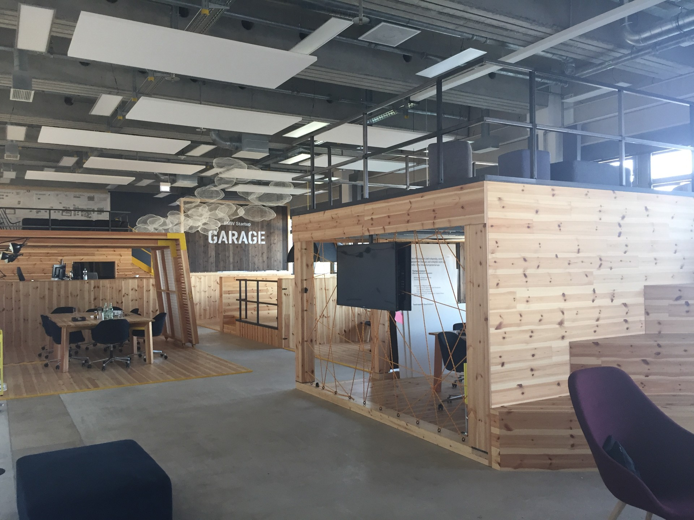

01どう動かしているのか。
事業部の用途に合い、動作する試作品、専任チーム、法人格等を持つ企業を選ぶ。最初の接点から評価まで4〜8週間と公表し、採択後はサプライヤー番号と購入注文書を発行する。支払対象は技術の初回購入と統合・検証に必要な費用で、金額は要件を受けて提案する方式。約4か月のパイロットでは実際のBMW部門と検証し、成功後の追加開発・供給契約は研究開発部門と購買部門が直接交渉する。公式説明では知財所有と非独占性を維持する。継続購入は自動ではなく、量産への追加開発もあり得る。Embotechでは2018年からの支援が工場内の車両自動搬送への採用につながり、その後2024年に別部門のBMW i Venturesが出資した。
- 事業部課題と技術の適合を審査
- 供給者登録・初回有償発注
- 約4か月で現場検証
- 研究開発・購買が継続契約を判断
02誰が負担し、誰が担うか。
BMW Groupが試作品・統合・検証の対価を発注。スタートアップには売上となる。株式取得を行うBMW i Venturesとは別制度。
制度やプログラムの財源と、各参加企業・地域に発生する費用は同じではありません。公開範囲を超える案件別予算・契約条件は未確認です。
03確認できたこと。
2025年2月の10周年時点で4,700社評価、220社超と共同案件、30社が既存供給者。
読み取れる範囲：応募全体からの成功率でも、同一採択年の追跡調査でもない。
原典で確かめる ↗ 出典の説明 ↓04日本で活かすなら。
【分析】日本で移すべきは「スタートアップを集める施策」だけではなく、実証前の購買責任者、発注対象、支払期限、採用判定を揃えることだ。共創事務局は紹介件数を追うだけでなく、現場の課題を小さな購入仕様へ翻訳し、既存購買部門に接続する必要がある。自治体や地域企業が参加する場合も、技術を使う事業者、費用負担者、住民への便益を分ける。公費を使うなら公平な参加機会と選定理由を残し、既存大企業に販売できる企業だけへ支援が偏らないようにする。契約着手日、初回支払日、90日後の継続発注を追えば、交流から事業化への転換を測りやすい。
05そのまま真似できないこと。
BMWが買える成熟度を持つ企業を選ぶため、採択企業の成果を制度単独の因果効果とは見なせない。38社超の採用も売上規模、利益、長期存続を示さない。反対仮説は「成果の主因は有償実証ではなく、ブランド力と事前選抜」である。技術検証の実費と本導入後の運用総費用を混同しない。地域課題に直接適用する際は公共的な優先順位と単独企業の購買利益が一致するとは限らない。
06次に、何を確かめるか。
【提案・未実施】共創責任者と購買責任者が、成熟度を揃えた6案件で12週間の有償検証を実施。直近の類似6案件と初回契約日数、現場効果、180日以内の継続発注を比較する。契約日数が短縮し、6件中3件以上で継続購入なら継続。短縮だけなら採用基準を変更。支払者不在または現場便益なしなら停止する。
07現場を、写真と動画で。

PHOTO: Marvel44 · 掲載元 ↗ · CC BY-SA 4.0 ↗ · 縮小・表示枠に合わせた切り抜き。色変更なし。
冒頭写真：BMW Startup Garageの打合せスペース。2017年の施設記録。
公式サイトで、写真・最新の活動を見る ↗08原典を読む。
From pioneer to innovation powerhouse: BMW Startup Garage marks 10 years ↗
設立、2025年累計値、Embotechの調達と後続出資